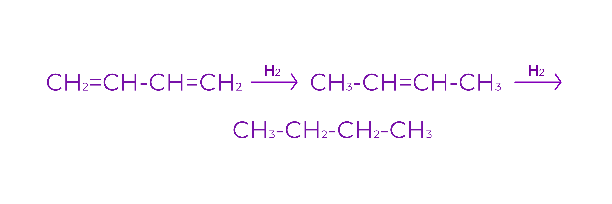
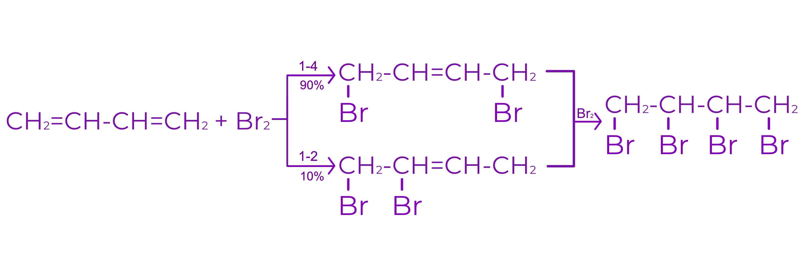
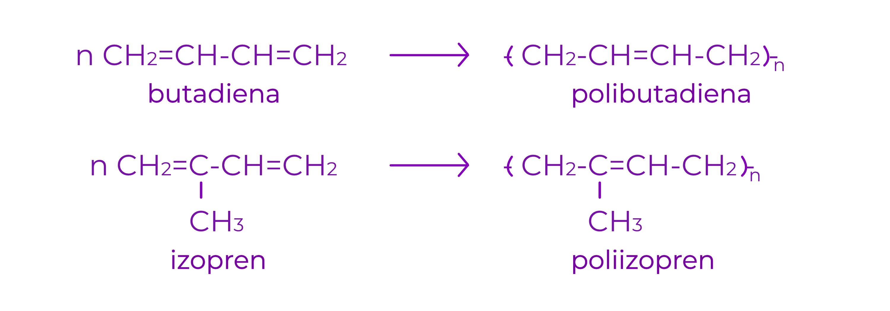
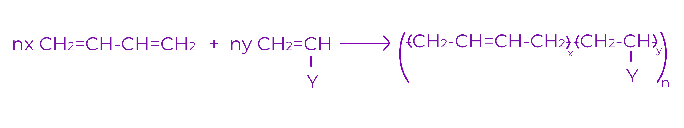

Alcadiene
1.Definitie:
Alcadienele reprezinta hidrocarburi aciclice, nesaturate
Formula generala: CnH2n-2
Nesaturarea echivalenta: N.E = 2
Exemple:
1,3-butadiena

1,2-butadiena

propadiena
2.Clasificare:
a. Diene cumulate
Prezinta cele 2 legaturi duble la acelasi atom de C (hibridizat sp)
Exemplu:
propadiena
b. Diene conjugate
Cele 2 legaturi duble sunt despartite printr-o legatura de tip σ
Exemplu:
1,3-butadiena
c. Diene izolate
Cele 2 legaturi duble sunt despartite prin doua sau mai multe legaturi de tip σ
Exemplu:

1,5-hexadiena
3.Nomenclatura:
Denumirea se formeaza prin inlocuirea sufixului “an” de la alcanul cu acelasi numar de atomi de C cu sufixul “diena” (alcadiena)
Exemple:
CH2=CH=CH2 : propadiena
CH2=CH-CH=CH2 : 1,3-butadiena
CH2=C=CH-CH3 : 1,2-butadiena
4. Izomerie:
a. Izomeria de functiune
La N.E =2 corespund urmatoarele clase de functiuni: alchine, cicloalchene, diene
b. Izomeria de catena (n > 5)
c. Izomeria de pozitie (datorita pozitiei relative a dublei legaturi in catena; apare la n > 4)
d. Izomeria spatiala (geometrica si eventual optica)
Izomeria geometrica apare in conditiile existentei izomeriei geometrice la una sau la ambele legaturi duble
5.Proprietati fizice:
a. Starea de agregare
C 1 - C 4 : gaze
C 5 - C 17 : lichide
> C 17 : solide
b. Punctele de fierbere si de topire
Punctele de fierbere si de topire sunt mai mici decat la alcanii corespunzatori
c. Solubilitate
Dienele sunt insolubile in apa
Dienele au molecula nepolara
Sunt solubili in solventi organici (benzina, tetraclorura de carbon)
6.Proprietati chimice:
1. Reactia de aditie
a. Aditia hidrogenului
Poate avea loc in doua etape, separabile sau nu in functie de natura catalizatorului

b. Aditia halogenilor
Are loc atat 1-4, cat si 1-2

2. Reactia de polimerizare

3. Reactia de copolimerizare
